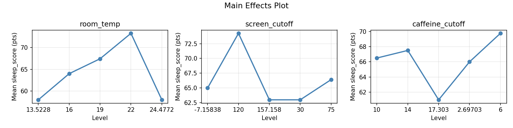
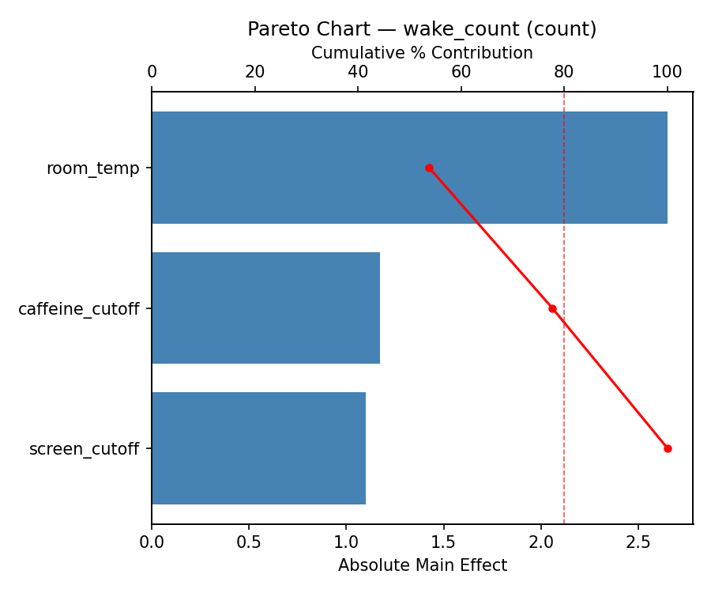
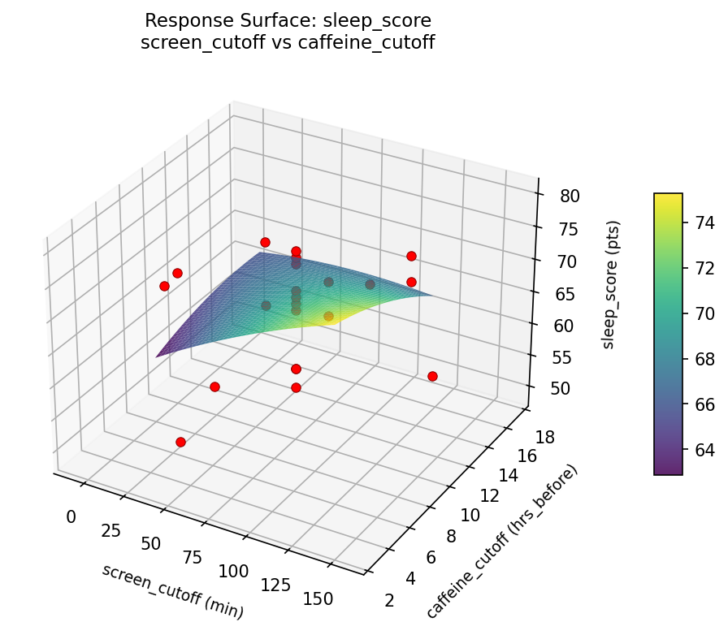
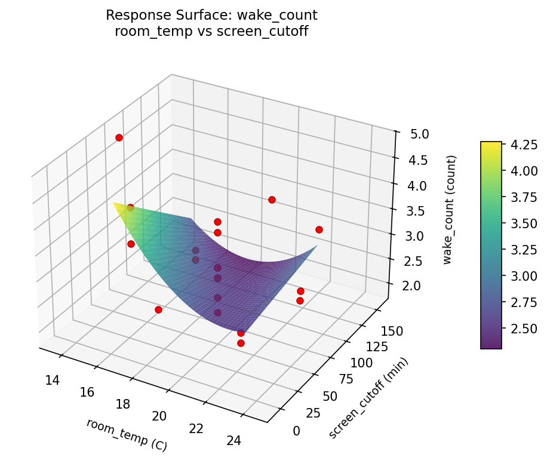
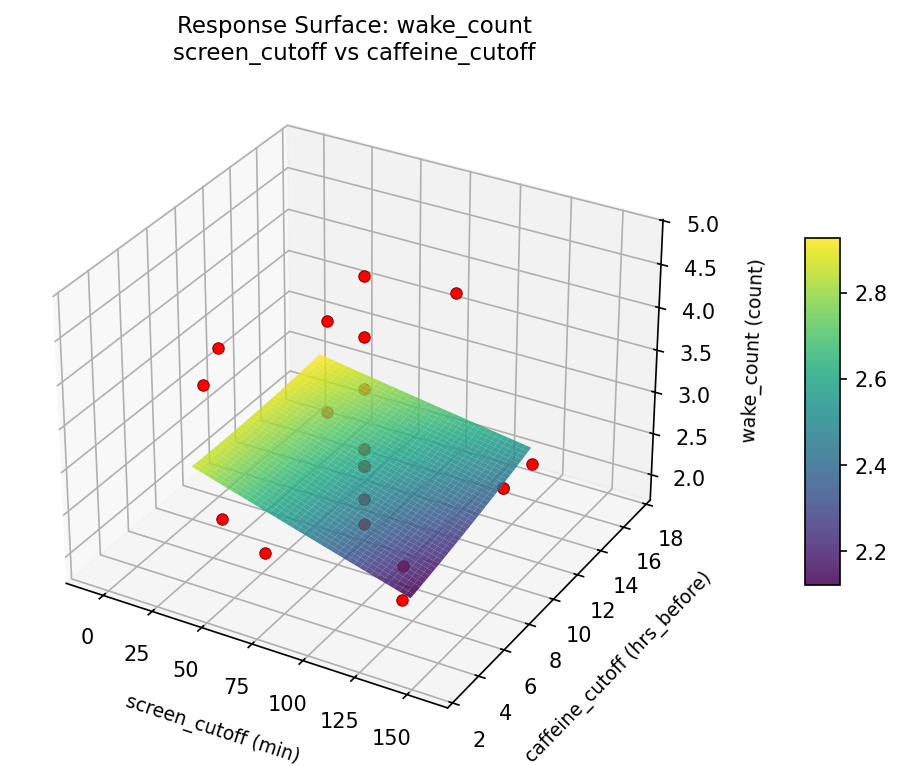

Summary
This experiment investigates sleep quality optimization. Central composite design to maximize sleep quality score and minimize wake-ups by tuning room temperature, screen cutoff time, and caffeine cutoff hour.
The design varies 3 factors: room temp (C), ranging from 16 to 22, screen cutoff (min), ranging from 30 to 120, and caffeine cutoff (hrs_before), ranging from 6 to 14. The goal is to optimize 2 responses: sleep score (pts) (maximize) and wake count (count) (minimize). Fixed conditions held constant across all runs include bedtime = 22:30, wake time = 06:30.
A Central Composite Design (CCD) was selected to fit a full quadratic response surface model, including curvature and interaction effects. With 3 factors this produces 22 runs including center points and axial (star) points that extend beyond the factorial range.
Quadratic response surface models were fitted to capture potential curvature and factor interactions. The RSM contour plots below visualize how pairs of factors jointly affect each response.
Key Findings
For sleep score, the most influential factors were room temp (43.3%), screen cutoff (31.9%), caffeine cutoff (24.8%). The best observed value was 80.0 (at room temp = 19, screen cutoff = 75, caffeine cutoff = 10).
For wake count, the most influential factors were room temp (53.8%), caffeine cutoff (23.9%), screen cutoff (22.3%). The best observed value was 1.9 (at room temp = 16, screen cutoff = 120, caffeine cutoff = 6).
Recommended Next Steps
- Run confirmation experiments at the predicted optimal settings to validate the model.
- Consider whether any fixed factors should be varied in a future study.
Experimental Setup
Factors
| Factor | Low | High | Unit |
|---|
room_temp | 16 | 22 | C |
screen_cutoff | 30 | 120 | min |
caffeine_cutoff | 6 | 14 | hrs_before |
Fixed: bedtime = 22:30, wake_time = 06:30
Responses
| Response | Direction | Unit |
|---|
sleep_score | ↑ maximize | pts |
wake_count | ↓ minimize | count |
Configuration
{
"metadata": {
"name": "Sleep Quality Optimization",
"description": "Central composite design to maximize sleep quality score and minimize wake-ups by tuning room temperature, screen cutoff time, and caffeine cutoff hour"
},
"factors": [
{
"name": "room_temp",
"levels": [
"16",
"22"
],
"type": "continuous",
"unit": "C"
},
{
"name": "screen_cutoff",
"levels": [
"30",
"120"
],
"type": "continuous",
"unit": "min"
},
{
"name": "caffeine_cutoff",
"levels": [
"6",
"14"
],
"type": "continuous",
"unit": "hrs_before"
}
],
"fixed_factors": {
"bedtime": "22:30",
"wake_time": "06:30"
},
"responses": [
{
"name": "sleep_score",
"optimize": "maximize",
"unit": "pts"
},
{
"name": "wake_count",
"optimize": "minimize",
"unit": "count"
}
],
"settings": {
"operation": "central_composite",
"test_script": "use_cases/107_sleep_quality/sim.sh"
}
}
Experimental Matrix
The Central Composite Design produces 22 runs. Each row is one experiment with specific factor settings.
| Run | room_temp | screen_cutoff | caffeine_cutoff |
|---|
| 1 | 19 | 75 | 10 |
| 2 | 22 | 30 | 14 |
| 3 | 16 | 120 | 6 |
| 4 | 19 | 157.158 | 10 |
| 5 | 19 | 75 | 10 |
| 6 | 13.5228 | 75 | 10 |
| 7 | 19 | 75 | 2.69703 |
| 8 | 19 | 75 | 10 |
| 9 | 22 | 120 | 6 |
| 10 | 24.4772 | 75 | 10 |
| 11 | 19 | 75 | 10 |
| 12 | 19 | -7.15838 | 10 |
| 13 | 19 | 75 | 10 |
| 14 | 16 | 30 | 14 |
| 15 | 19 | 75 | 10 |
| 16 | 22 | 30 | 6 |
| 17 | 19 | 75 | 17.303 |
| 18 | 22 | 120 | 14 |
| 19 | 19 | 75 | 10 |
| 20 | 16 | 30 | 6 |
| 21 | 16 | 120 | 14 |
| 22 | 19 | 75 | 10 |
Step-by-Step Workflow
1
Preview the design
$ python doe.py info --config use_cases/107_sleep_quality/config.json
2
Generate the runner script
$ python doe.py generate --config use_cases/107_sleep_quality/config.json \
--output use_cases/107_sleep_quality/results/run.sh --seed 42
3
Execute the experiments
$ bash use_cases/107_sleep_quality/results/run.sh
4
Analyze results
$ python doe.py analyze --config use_cases/107_sleep_quality/config.json
5
Get optimization recommendations
$ python doe.py optimize --config use_cases/107_sleep_quality/config.json
6
Generate the HTML report
$ python doe.py report --config use_cases/107_sleep_quality/config.json \
--output use_cases/107_sleep_quality/results/report.html
Features Exercised
| Feature | Value |
|---|
| Design type | central_composite |
| Factor types | continuous (all 3) |
| Arg style | double-dash |
| Responses | 2 (sleep_score ↑, wake_count ↓) |
| Total runs | 22 |
Analysis Results
Generated from actual experiment runs using the DOE Helper Tool.
Response: sleep_score
Top factors: room_temp (43.3%), screen_cutoff (31.9%), caffeine_cutoff (24.8%).
Pareto Chart

Main Effects Plot

Response: wake_count
Top factors: room_temp (53.8%), caffeine_cutoff (23.9%), screen_cutoff (22.3%).
Pareto Chart

Main Effects Plot

Response Surface Plots
3D surfaces fitted with quadratic RSM. Red dots are observed data points.
sleep score room temp vs caffeine cutoff

sleep score room temp vs screen cutoff

sleep score screen cutoff vs caffeine cutoff

wake count room temp vs caffeine cutoff

wake count room temp vs screen cutoff

wake count screen cutoff vs caffeine cutoff

Full Analysis Output
RSM surface: rsm_sleep_score_room_temp_vs_screen_cutoff.png
RSM surface: rsm_sleep_score_room_temp_vs_caffeine_cutoff.png
RSM surface: rsm_sleep_score_screen_cutoff_vs_caffeine_cutoff.png
RSM surface: rsm_wake_count_room_temp_vs_screen_cutoff.png
RSM surface: rsm_wake_count_room_temp_vs_caffeine_cutoff.png
RSM surface: rsm_wake_count_screen_cutoff_vs_caffeine_cutoff.png
=== Main Effects: sleep_score ===
Factor Effect Std Error % Contribution
--------------------------------------------------------------
room_temp 15.2500 1.6775 43.3%
screen_cutoff 11.2500 1.6775 31.9%
caffeine_cutoff 8.7500 1.6775 24.8%
=== Summary Statistics: sleep_score ===
room_temp:
Level N Mean Std Min Max
------------------------------------------------------------
13.5228 1 58.0000 0.0000 58.0000 58.0000
16 4 64.0000 12.2746 49.0000 75.0000
19 12 67.4167 6.0821 55.0000 76.0000
22 4 73.2500 5.3151 69.0000 80.0000
24.4772 1 58.0000 0.0000 58.0000 58.0000
screen_cutoff:
Level N Mean Std Min Max
------------------------------------------------------------
-7.15838 1 65.0000 0.0000 65.0000 65.0000
120 4 74.2500 4.5735 69.0000 80.0000
157.158 1 63.0000 0.0000 63.0000 63.0000
30 4 63.0000 11.4310 49.0000 75.0000
75 12 66.4167 7.0512 55.0000 76.0000
caffeine_cutoff:
Level N Mean Std Min Max
------------------------------------------------------------
10 12 66.5000 6.9479 55.0000 76.0000
14 4 67.5000 5.9722 59.0000 73.0000
17.303 1 61.0000 0.0000 61.0000 61.0000
2.69703 1 66.0000 0.0000 66.0000 66.0000
6 4 69.7500 14.0327 49.0000 80.0000
=== Main Effects: wake_count ===
Factor Effect Std Error % Contribution
--------------------------------------------------------------
room_temp 2.6500 0.1705 53.8%
caffeine_cutoff 1.1750 0.1705 23.9%
screen_cutoff 1.1000 0.1705 22.3%
=== Summary Statistics: wake_count ===
room_temp:
Level N Mean Std Min Max
------------------------------------------------------------
13.5228 1 4.8000 0.0000 4.8000 4.8000
16 4 3.0250 0.9979 2.1000 4.2000
19 12 2.7917 0.5071 1.9000 3.7000
22 4 2.1500 0.2082 1.9000 2.4000
24.4772 1 4.1000 0.0000 4.1000 4.1000
screen_cutoff:
Level N Mean Std Min Max
------------------------------------------------------------
-7.15838 1 3.0000 0.0000 3.0000 3.0000
120 4 2.1000 0.1633 1.9000 2.3000
157.158 1 3.2000 0.0000 3.2000 3.2000
30 4 3.0750 0.9430 2.2000 4.2000
75 12 3.0167 0.8397 1.9000 4.8000
caffeine_cutoff:
Level N Mean Std Min Max
------------------------------------------------------------
10 12 3.0083 0.8062 1.9000 4.8000
14 4 2.5250 0.6652 2.1000 3.5000
17.303 1 3.7000 0.0000 3.7000 3.7000
2.69703 1 2.6000 0.0000 2.6000 2.6000
6 4 2.6500 1.0472 1.9000 4.2000
Pareto chart (sleep_score): use_cases/107_sleep_quality/results/analysis/pareto_sleep_score.png
Pareto chart (wake_count): use_cases/107_sleep_quality/results/analysis/pareto_wake_count.png
Main effects (sleep_score): use_cases/107_sleep_quality/results/analysis/main_effects_sleep_score.png
Main effects (wake_count): use_cases/107_sleep_quality/results/analysis/main_effects_wake_count.png
Optimization Recommendations
=== Optimization: sleep_score ===
Direction: maximize
Best observed run: #18
room_temp = 19
screen_cutoff = 75
caffeine_cutoff = 10
Value: 80.0
RSM Model (linear, R² = 0.0491, Adj R² = -0.1094):
Coefficients:
intercept +67.0000
room_temp -1.2660
screen_cutoff -1.5382
caffeine_cutoff -0.6198
RSM Model (quadratic, R² = 0.0966, Adj R² = -0.5810):
Coefficients:
intercept +67.5131
room_temp -1.2660
screen_cutoff -1.5382
caffeine_cutoff -0.6198
room_temp*screen_cutoff -0.8750
room_temp*caffeine_cutoff -0.1250
screen_cutoff*caffeine_cutoff +0.6250
room_temp^2 -1.4566
screen_cutoff^2 +0.1934
caffeine_cutoff^2 +0.4934
Curvature analysis:
room_temp coef=-1.4566 concave (has a maximum)
caffeine_cutoff coef=+0.4934 convex (has a minimum)
screen_cutoff coef=+0.1934 convex (has a minimum)
Notable interactions:
room_temp*screen_cutoff coef=-0.8750 (antagonistic)
screen_cutoff*caffeine_cutoff coef=+0.6250 (synergistic)
Predicted optimum (from linear model):
room_temp = 16
screen_cutoff = 30
caffeine_cutoff = 6
Predicted value: 70.4241
Model quality: Weak fit — consider adding center points or using a different design.
Factor importance:
1. screen_cutoff (effect: 14.0, contribution: 35.7%)
2. room_temp (effect: 13.2, contribution: 33.8%)
3. caffeine_cutoff (effect: 12.0, contribution: 30.6%)
=== Optimization: wake_count ===
Direction: minimize
Best observed run: #17
room_temp = 16
screen_cutoff = 120
caffeine_cutoff = 6
Value: 1.9
RSM Model (linear, R² = 0.0338, Adj R² = -0.1272):
Coefficients:
intercept +2.8682
room_temp +0.0261
screen_cutoff +0.1185
caffeine_cutoff +0.1275
RSM Model (quadratic, R² = 0.1463, Adj R² = -0.4939):
Coefficients:
intercept +2.7050
room_temp +0.0261
screen_cutoff +0.1185
caffeine_cutoff +0.1275
room_temp*screen_cutoff +0.0750
room_temp*caffeine_cutoff +0.1750
screen_cutoff*caffeine_cutoff -0.1500
room_temp^2 +0.2266
screen_cutoff^2 +0.0016
caffeine_cutoff^2 +0.0166
Curvature analysis:
room_temp coef=+0.2266 convex (has a minimum)
caffeine_cutoff coef=+0.0166 negligible curvature
screen_cutoff coef=+0.0016 negligible curvature
Predicted optimum (from linear model):
room_temp = 22
screen_cutoff = 120
caffeine_cutoff = 14
Predicted value: 3.1403
Model quality: Weak fit — consider adding center points or using a different design.
Factor importance:
1. room_temp (effect: 2.6, contribution: 53.3%)
2. screen_cutoff (effect: 1.5, contribution: 30.8%)
3. caffeine_cutoff (effect: 0.8, contribution: 15.9%)